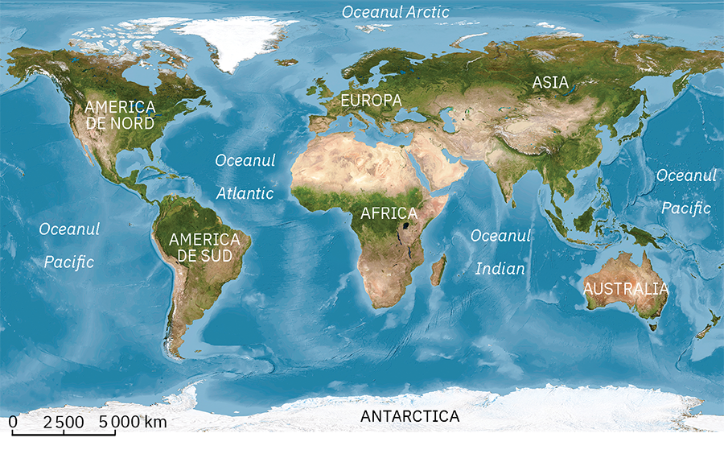

Relieful Terrei
A. Continentele și bazinele oceanice
Explorez
De‑a lungul sutelor de milioane de ani, învelișul exterior al Pământului a suferit puternice transformări, astfel că astăzi are o suprafață foarte neregulată. Totalitatea denivelărilor de la suprafața scoarței terestre reprezintă relieful. Aceste denivelări sunt numite forme de relief și se compun din suprafețe diferite ca mod de formare, mărime și înfățișare.
Cele mai mari și mai complexe denivelări ale scoarței terestre, numite și forme planetare sau macroforme de relief, au rezultat prin acțiunea forțelor din interiorul planetei.
Identifică în imaginea alăturată cele două forme de relief planetare.
Rețin
Continentele sunt cele mai mari întinderi de uscat ale planetei, alcătuite din scoarță continentală, fiind înconjurate de apa oceanelor și a mărilor. Întinderile de uscat ocupă, în total, 29% din suprafața Pământului. Continentele Terrei sunt: Asia, Europa, Africa, America de Nord, America de Sud, Australia și Antarctica.
Bazinele oceanice reprezintă cele mai mari adâncituri ale scoarței terestre (ca adâncime și suprafață), în care s‑au acumulat cantități uriașe de apă și s‑au format oceanele. Ele ocupă, în total, 71% din suprafața Terrei, sunt alcătuite din scoarță oceanică și au rezultat din evoluția rifturilor. Bazinele oceanice sunt: Atlantic, Pacific, Indian și Arctic.
Aplic
1.Localizează pe harta de mai sus continentele și bazinele oceanice ale Terrei.
2.Observă reprezentările grafice alăturate și ordonează pe caiet, în două tabele, continentele și oceanele Terrei de la cel mai mare la cel mai mic.